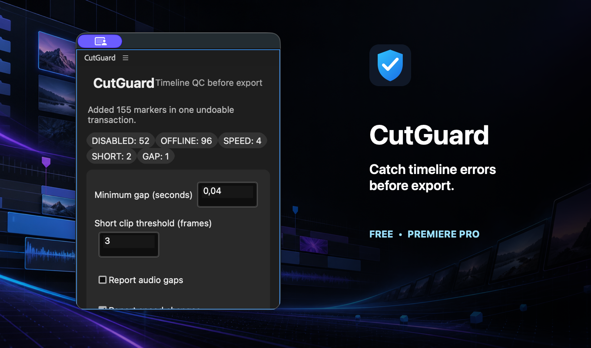
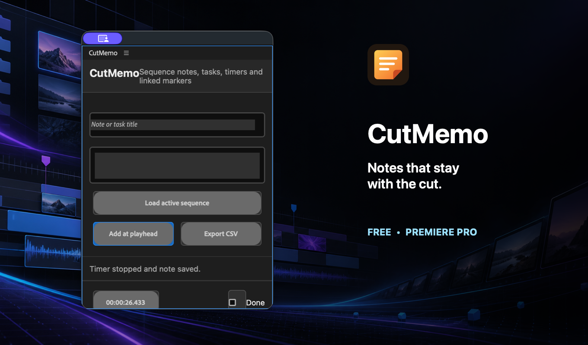
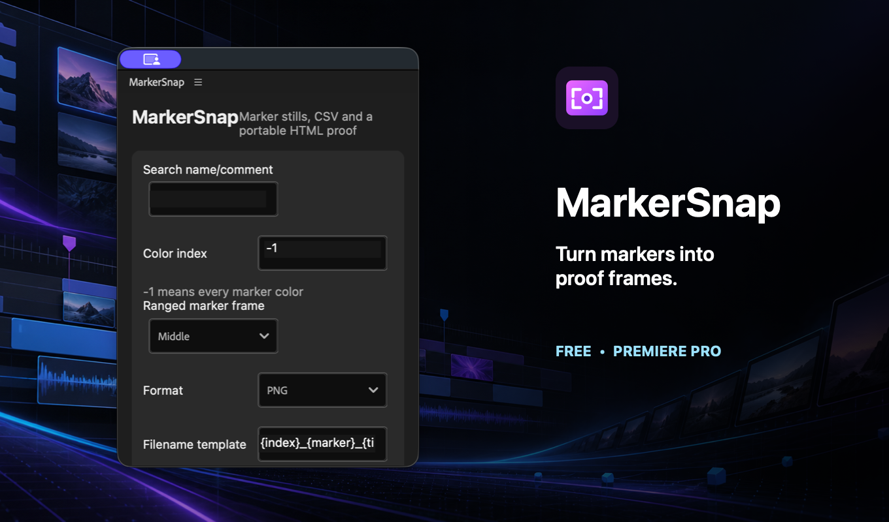
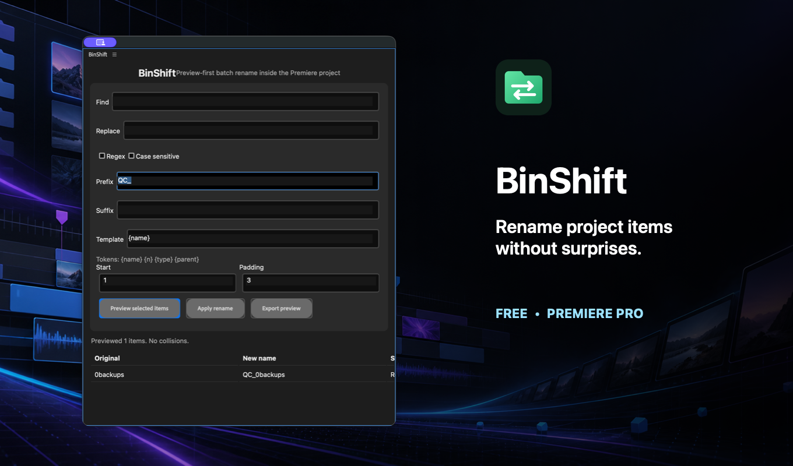

Timeline QC
CutGuard
Scan gaps, offline media, disabled clips, speed changes and suspiciously short edits before export.
Four focused panels that remove repetitive clicks, keep projects cleaner and help editors catch problems before delivery.
Explore the tools
Scan gaps, offline media, disabled clips, speed changes and suspiciously short edits before export.

Keep tasks, notes and a work timer beside the sequence, then jump to the exact frame or sync a marker.

Export consistent frames from sequence markers with safe filenames, a CSV manifest and a portable review page.

Preview project-item renames, catch collisions and apply the complete plan in one undoable transaction.
No accounts, analytics or network requests inside the plugins.
Project changes happen only after an explicit action and use Premiere transactions.
No bloated suite. Each panel solves one repeatable editing problem.